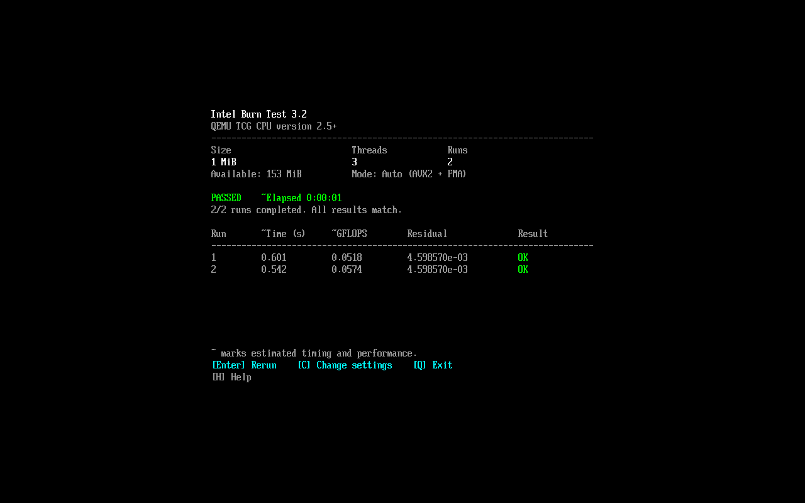
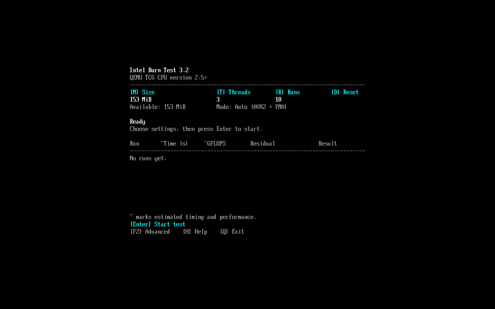
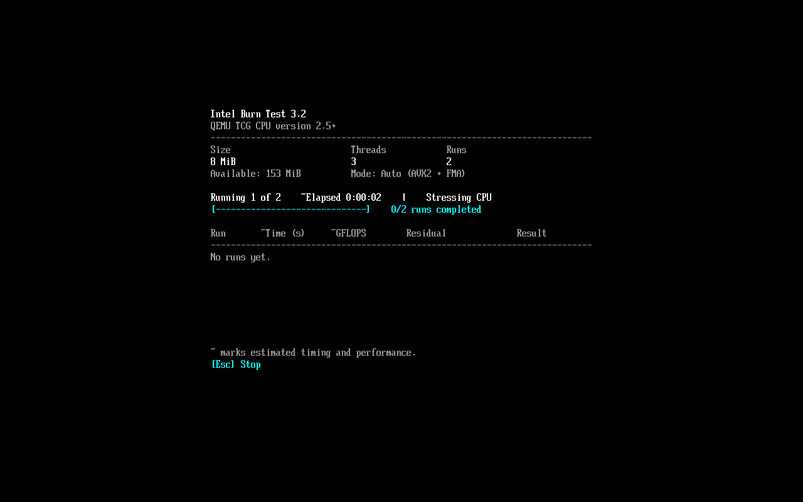

Choose your USB
Open the installer and select your drive. Its name, capacity, and drive letters help you pick the right one.
NEW · v3.2 Bootable USB edition
Push for a higher clock. Check your next undervolt. Now boot IntelBurnTest directly from a USB and test your CPU before loading Windows or Linux.

From download to first test
One download includes everything you need. Prepare the drive on Windows, then use it on a PC with 64-bit UEFI.
Open the installer and select your drive. Its name, capacity, and drive letters help you pick the right one.
FAT32 drives keep your files. If formatting is needed, back up your files first. Setup identifies the drive and requires you to type ERASE before deleting anything.
Open your PC’s boot menu and choose the USB’s UEFI entry. Set Size, Threads, and Runs, then press Enter.
This release is unsigned: disable Secure Boot to start the USB edition. The installer excludes internal and system disks. An existing USB boot file is backed up before replacement.
Make every adjustment count
Your PC boots. The desktop looks fine. But can your overclock take the pressure? Give your CPU a hard workout with IBT, then use the result to decide what to try next.
Found a little more speed in the BIOS? Test those settings under heavy CPU load before you call the overclock done.
A higher clock or a lower voltage gives you a new setup to check. Run IBT again after a change to see how it holds up.
A failed test tells you those settings need another look. Make an adjustment and test again as you work toward an overclock worth keeping.
Choose memory use, CPU threads, and the number of runs. Start with a short check, then go longer as you refine your settings.
See how your settings hold up
Choose Size, Threads, and Runs. Follow each completed run in the results table, then rerun the same test or change your settings. A pass means the calculations stayed consistent during this test.


Keep it in your tuning toolkit
Getting another year out of your current rig? Chasing the limit of a build you've saved up for? Keep IBT handy for the next adjustment. Download the 84 KiB USB installer and keep a bootable test drive handy. The Windows and Linux desktop apps are still available below.
IntelBurnTest 3.2 · Bootable USB
A bootable CPU test for your next build, tune, or troubleshooting session.
Desktop editions · v3.1.0
Run IBT in Windows or Linux, with optional test logging.
Linux requires glibc, X11, and Xft; run chmod +x IntelBurnTest-linux-x64 after downloading. Desktop release notes